Here we will describe a probabilistic approach to solving
equation (1.6). For simplicity let us
consider the case when the forcing term
 .
We will not be rigorous.
.
We will not be rigorous.
We will
suppose that we have found  using equation (1.5).
Now let
using equation (1.5).
Now let
 be a Brownian motion in 3 dimensions, starting at
the origin. Define
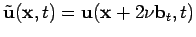.
Let
be a random vector field that satisfies
the equations
be a Brownian motion in 3 dimensions, starting at
the origin. Define
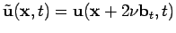.
Let
be a random vector field that satisfies
the equations
The reason why this works is because of the Itô formula. We have
that
The solution to equation (6.1) can be computed as
follows. Suppose that the initial value of  satisfies
equation (1.3). Then if
satisfies
equation (1.3). Then if
This can be used to obtain the following plausibility argument for the
regularity of the Navier-Stokes equations. Let 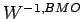 denote the
space of functions from
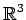 for which minus one derivative is in
the space of functions of bounded mean oscillation. It is known that the
space
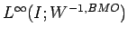 is a critical space for proving
regularity for the Navier-Stokes
equations (see below). That is, if one can show that the solution to the Navier-Stokes
equations is uniformly in time in any space better than (such as
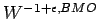
for any  ), then the solution is regular.
), then the solution is regular.
Now if the initial data are very nice, then by using some partition of unity
argument, we may suppose that indeed the initial value of  does satisfy
equation (1.3) for some finite value of 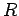,
where the initial values of 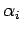 and 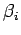 are compactly
supported smooth functions. Then it is easy to see that the solutions
for and provided by the transport equations stay
uniformly in 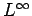. Thus it follows that
does satisfy
equation (1.3) for some finite value of 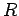,
where the initial values of 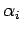 and 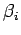 are compactly
supported smooth functions. Then it is easy to see that the solutions
for and provided by the transport equations stay
uniformly in 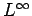. Thus it follows that
 is uniformly
in the space .
is uniformly
in the space .
Thus
is a finite sum of a product of functions uniformly in
and functions uniformly in . Thus it might seem that we
are close to showing that  (which is the Leray projection of an average
of translations of
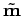) is in a space that is critical for proving
regularity.
(which is the Leray projection of an average
of translations of
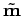) is in a space that is critical for proving
regularity.
There are some large, probably insurmountable problems with this approach. The lesser problem is that we need a space that is better than critical. The bigger problem is that the space created by taking the convex closure of products of bounded functions and functions in is not really a well defined space, in that it encompasses every function.
Criticality of
: Let us present a
formal proof of this fact, in the case of the Cauchy problem with zero
right-hand side.
Let  be the solution to the Navier-Stokes
equations which belongs to the space
. Multiply equation (1.5) by
and integrate over
. Notice also that
be the solution to the Navier-Stokes
equations which belongs to the space
. Multiply equation (1.5) by
and integrate over
. Notice also that